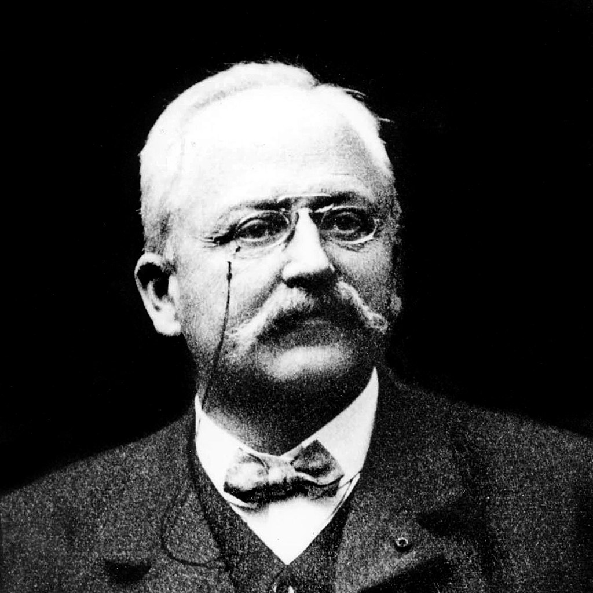
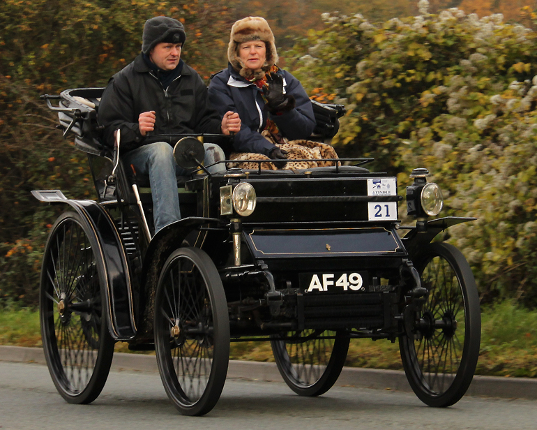
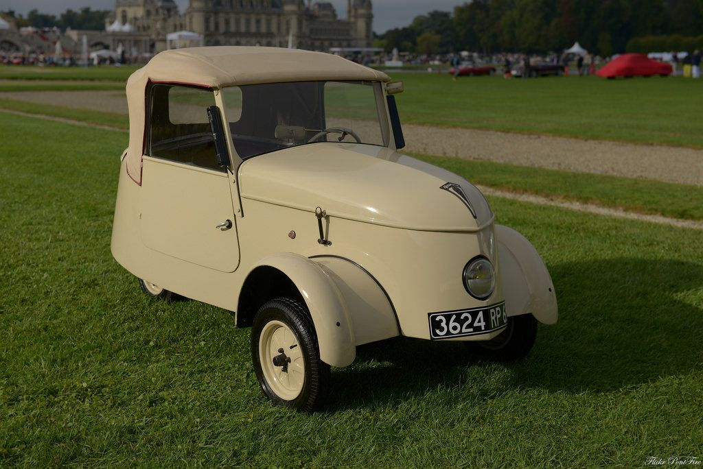

Peugeot
Peugeot произношение названия близко к «пёжо́», однако в русском языке закрепилась транскрипция «пежо́» — один из основных французских производителей автомобилей, часть PSA Peugeot Citroën. По данным 2007 года материнская компания PSA Peugeot Citroën является вторым по величине в Европе производителем автомобилей.
XIX век Править Пассатижи фирмы «Братья Пежо», начало XX века.
Peugeot 6HP Vis-à-vis 1898 Семья Пежо из городка Валантинье
(англ.)русск. (коммуна Монбельяр, Франш-Конте, Франция), начала
заниматься мануфактурным делом в 1700-х годах. В 1840 году Пежо
запустили производство ручных кофемолок и мельниц для перца и соли.
Запатентованный стальной механизм гарантировал безотказную работу,
поэтому производитель предоставлял (и предоставляет до сих пор)
пожизненную гарантию на металлические элементы мельниц для перца,
соли или кофе. 20 ноября 1858 года Эмиль Пежо запатентовал
изображение льва в качестве торговой марки. Компания вышла на рынок
кринолиновой одежды, в конструкции которой использовались стальные
прутья. За ней последовали каркас для зонтов, лезвия для пил,
спицованные колёса и в конечном счёте велосипеды. В 1882 году Арман
Пежо представил свой пенни-фартинг «Le Grand Bi» и ряд других
велосипедов. Их сборка продолжалась до конца XX века, хотя
автомобильная и велосипедная компании разделились в 1926 году.

В России на рубеже XIX—XX веков компания была известна как
производитель столярного инструмента: стаместок, рубанков, сверл и
коловоротов. Инструменты эти стоили достаточно дорого: так, простой
рубанок Peugeot стоил в 1901 году 1 рубль 97 копеек, что было
сопоставимо со стоимостью коровы. Арман Пежо рано начал
интересоваться автомобилем и после встречи с Готтлибом Даймлером и
другими убедился в его жизнеспособности. Первая машина Пежо
(трёхколёсный паровой автомобиль, спроектированный Леоном Серполле)
была готова в 1889 году; собрали лишь четыре штуки. Паровая машина
была тяжёлой и громоздкой и требовала долговременного прогрева. В
1890 году после встречи Даймлера и Эмиля Левассора на
четырёхколёсном автомобиле паровую машину заменили на бензиновый
двигатель внутреннего сгорания, который построил Panhard по лицензии
Даймлера. Автомобиль был сложнее, чем многие его современники, с
трёхопорной подвеской и скользкой передачей. В 1892 году собрали
двадцать девять автомобилей, сорок в 1894-м, семьдесят два в 1895-м,
156 в 1898-м и ровно триста в 1899 годах. Этим ранним моделям давали
названия «Type» и число по порядку, например, Type 12, начиная с
1895 года. Пежо стал первым производителем, который использовал
резиновые шины на бензиновом автомобиле (в 1895 году).Пежо стал
пионером также в моторных гонках, приняв участие в 1894 году в гонке
«Paris-Rouen Rally» на пяти машинах (придя к финишу вторым, третьим
{Пьер Жиффард, задумавший это испытание} и пятым {Коехлин}) и в 1895
году в гонке Париж — Бордо на трёх, где их побил автомобиль
Panhardа. Панхарды были дисквалифицированы за двухместное
транспортное средство, несмотря на среднюю скорость 20,8 км/ч и
взятие приза в 31 500 франков.

Здесь произошёл дебют пневматических шин Michelin в гонках. В такие
шины был «обут» автомобиль «Пежо»; они оказались недостаточно
прочными. Однако, автомобиль всё ещё сильно смахивал на безлошадные
повозки по внешности и управлялся румпелем. В 1896 году мир увидел
первые двигатели Пежо; они больше не зависели от Даймлера.
Спроектированный Ригуло, первый мотор имел 8 л. с. и располагался
сзади Type 15. Он также послужил основанием для почти точной копии,
произведённой компанией Rochet-Schneider. Последовали дальнейшие
усовершенствования: движок переместился вперёд (на Type 48) и вскоре
оказался под капотом (кожухом) в передней части автомобиля; на Type
36 появился руль; автомобили начали больше походить на современную
машину. В 1896 году Арман Пежо порвал с «Les Fils de Peugeot
Frères», чтобы основать свою собственную компанию, «Société Anonyme
des Automobiles Peugeot», построить новую фабрику в Audincourt и
полностью сосредоточиться на автомобилях. В 1899 году продажи
достигли 300 штук; общие автопродажи по всей Франции в том году
составили 1200 штук. В том же году Лемэйтр победил в гонке
«Nice-Castellane-Nice Rally» на особом автомобиле с двигателем
рабочим объёмом 5850 см³ и мощностью 20 л. На Парижском салоне в
1901 году Пежо представил небольшой одноцилиндровый двигатель
объёмом 652 см³ и мощностью 5 л. с. под названием «Bébé» («Малыш»),
разработанный молодым начинающим конструктором Этторе Бугатти, и
потерял свой консервативный образ, став лидером стиля. Заняв
девятнадцатое место в 1902 году в гонке Париж — Вена на автомобиле с
двигателем мощностью 50 л. с. и объёмом 11322 см³ и неудачно
выступив с двумя похожими автомобилями, Пежо вышел из гонок. В 1903
году Пежо добавил в ряд своей продукции мотоцикл, и с тех пор их
выпускали под маркой «Peugeot». К 1903 году Пежо производил половину
автомобилей Франции. Фирма предлагала на продажу «Bébé» с двигателем
мощностью 5 л. с., четырёхместный автомобиль с двигателями мощностью
6,5, 8 и 12 л. с., напоминая современные модели «Mercedes». На
Салоне в 1907 году был показан первый двигатель с шестью цилиндрами
и отмечен Тони Хубер как машиностроитель. К 1910 году
производственная линия «Пежо» включала двухцилиндровый двигатель
объёмом 1149 см³ и шесть четырёхцилиндровых объёмом от 2 до 6 л.. А
1912 году в Сошо открылась новая фабрика, которая стала основным
заводом компании в 1928-м. Она функционирует до сих пор (в 2008 году
завод произвёл 290 000 автомобилей). Бронеавтомобиль «Пежо» 18CV,
1915 В 1912 году Этторе Бугатти спроектировал для «Bébé» новый
четырёхцилиндровый двигатель объёмом 850 см³. В том же году Пежо
вернулся к гонкам с командой из трёх водителей-инженеров (поколение,
типичное для эпохи пионеров, иллюстрируемой в том числе и Энцо
Феррари): Жюль Гу (дипломированный специалист Arts et Metiers,
Париж), Паоло Цуккарели (из Hispano-Suiza) и Жорж Буальо (фр.)русск.
(их всех называли Les Charlatans — шарлатаны), с 26-летним
швейцарским инженером Эрнестом Генри, чтоб осуществить свои идеи.
Компания решила, что гонки на voiturette (легковом малолитражном
автомобиле) были недостаточны, и захотела попробовать grandes
épreuves (большой тур). Они сделали это с разработкой tour de force:
DOHC 7,6 литровый четырёхцилиндровик (110×200 мм) с четырьмя
клапанами в цилиндр. Он оказался быстрее, чем другие автомобили его
времени, и Буальо выиграл 1912 French Grand Prix на средней скорости
68,45 км/ч, несмотря на потерю третьей передачи и взятие
двадцатиминутного пит-стопа. В мае 1913 Гу взял этот же приз в
Индианаполисе и выиграл на средней скорости 75,92 км/ч, при
максимальной 93,5 км/ч. В 1914 году 3-литровый L5 Жорж Буальо
установил новый круговой рекорд Инди 99,5 км/ч, а Дерей пришёл
вторым (после бывшего аса Пежо Рене Томаса на Delage с 6235 см³).
Другой (под управлением брата Жоржа Буальо — Андре (фр.)русск.)
участвовал в 1915; похожие модели победили в 1916 (Дарио Реста) и
1919 (Хоуди Уилкокс) годах. Для Гран-при Франции 1913 был выпущен
улучшенный L5 (с двигателем 5655 см³) с шарикоподшипниковым
коленчатым валом, действующими от зубчатого привода
распределительными валами и смазкой сухого поддона; всё это скоро
стало стандартом для гоночных машин. Цуккерелли погиб во время
испытания на дорогах общего пользования, но Жорж Буальо легко
выиграл гонку, что сделало его (и Пежо) первым двойным победителем.
В 1914 French GP Пежо противостоял Mercedes, и несмотря на
новшество, четырёхколесные тормоза (у Бенца только задние), Буальо
не смог справиться с ними, и автомобиль сломался. Модель 1914 года
набирала за круг практически 103 км/ч на Инди в 1949, но всё же не
была в состоянии пройти квалификацию. Пежо более везло в 1915 году
на French GP и Кубке Вандербильта90. В течение Первой мировой войны
Пежо занимался главным образом производством вооружения, и
становится главным изготовителем оружия и военных автомобилей, от
велосипедов до танков и снарядов. Между двумя войнами Править После
первой мировой войны производство автомобилей возобновляется
всерьёз. Гонки также продолжались, Жорж Буальо участвовал в Targa
Florio 1919 на 2,5-литровом автомобиле, спроектированном специально;
машина имела 200 000 км пробега, но всё же Буальо с внушительным
двигателем (лучшим в его карьере) победил. Пежо в его руках приходил
третьим в 1925 Targa, первым в 1922 и 1925 Coppa Florio, первым в
1923 и 1925 Touring Car Grands Prix и первым в 1926 24 часа. Пежо
представил пять клапанов в цилиндр, тройной двигатель с
верхнерасположенным кулачковым валом для Гран-при, задуманный
Марселем Гремильоном (который раскритиковал ранний DOHC); но
двигатель отказал. В тот же самый год Пежо дебютировал 10 и 14 л.
с., бо́льший базировался на Type 153, и 6-литровый трубчатый клапан с
25 л. с., и новый микролитражный автомобиль с мотоциклетным
двигателем, La Quadrilette. Peugeot 201, 1929 В 1920-е гг. Пежо
расширялся, закрывая в 1926 велосипедное дело, чтобы сформировать
Cycles Peugeot, последовательно выгодное велосипедное подразделение,
пытаясь освободиться от слишком большого велосипедно-автобизнеса, и
взять под контроль более не существенные компании Bellanger и De
Dion в 1927. В 1928 году на свет появился Type 183. Новинкой в 1929
г. стал Peugeot 201, самый дешёвый автомобиль на французском рынке,
с изображением торговой марки Пежо (позже зарегистрированной) — три
цифры с нулем в центре. В 1931 201 получил независимую переднюю
подвеску. Впоследствии наступает Депрессия; продажи Пежо
уменьшились, но компания выжила. В 1933, пытаясь возродить
благосостояние, компания представила новый, аэродинамически
стилизованный ряд машин. В 1934 Пежо выпустил 402 BL Éclipse
Décapotable, первый автомобиль с откидным верхом с выдвигающимся
седаном — эту идею позже продолжил Ford Skyliner в 1950-е годы, а в
1995 году восстановил Mitsubishi 3000GT Spyder. Позже многие
производители предлагали выдвигающиеся седаны, включая сам Пежо с
двигателем объёмом 206 см³. Peugeot 601, 1934 Самые интересные три
модели тридцатых — Peugeot 202, Peugeot 302 и Peugeot 402. У этих
автомобилей были пышные корпуса, фары за скошенной решёткой,
очевидно вдохновлённые от Chrysler Airflow. 2,1-литровый 402 вошёл в
производство в 1935 и выпускался до конца 1941, несмотря на
оккупацию Франции нацистами. На 1936 год были новый вдохновлённый
Airflow 302 (работавший до 1938) и большая модель на базе 402,
спроектированная Андреаном и имевшая вертикальные стабилизатор и
бампер, с первой высоко установленной задней фарой. Простой 202
последовательно выпускался с 1938—1942, и ещё приблизительно 20
экземпляров были собраны из существующих заготовок для поставок в
феврале 1945. 202 поднял продажи Пежо в 1939 до 52 796, больше было
лишь у Citroën. Регулярное производство началось снова в середине
1946, и продолжилось в 1949. Во время Второй мировой войны Peugeot
создала электромобиль Peugeot VLV.

О выпуске было объявлено 1 мая 1941 года, а в 1942 году автомобили с
электродвигателями и 4 аккумуляторами поступили в продажу. Спрос на
такую новинку был вызван дефицитом бензина из-за немецкой
оккупационной политики. Всего было построено 377 машин, прежде чем
правительство запретило Peugeot VLV.